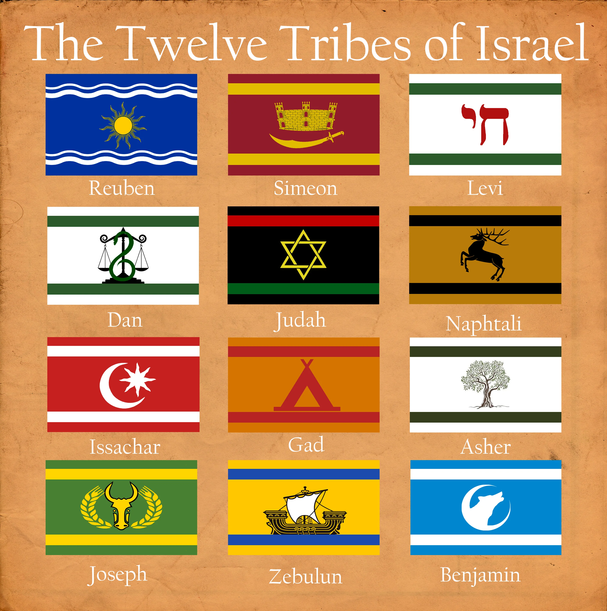
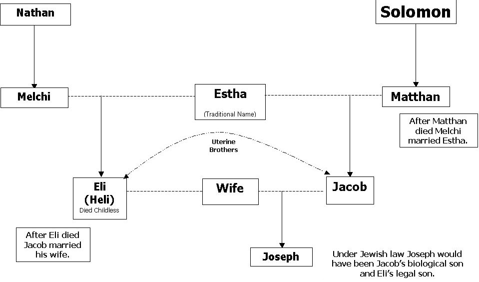

Die direkte Linie von Adam bis Jesus – 77 Generationen über 4.000+ Jahre der Schrift.
Dieser Stammbaum wurde aus folgenden Schlüsselstellen zusammengestellt (SCH2000):
Der erste Mensch, von Gott aus dem Staub der Erde geschaffen. Zeugte Set im Alter von 130 Jahren.
1. Mose 5:3-5Wurde Adam und Eva nach Abels Tod geboren. Zeugte Enosch im Alter von 105 Jahren.
1. Mose 5:6-8Zu seiner Zeit begannen die Menschen, den Namen des Herrn anzurufen. Zeugte Kenan im Alter von 90 Jahren.
1. Mose 5:9-11Zeugte Mahalalel im Alter von 70 Jahren.
1. Mose 5:12-14Zeugte Jared im Alter von 65 Jahren.
1. Mose 5:15-17Zeugte Henoch im Alter von 162 Jahren.
1. Mose 5:18-20Wandelte treu mit Gott, dann nahm Gott ihn zu sich; er sah den Tod nicht. Zeugte Methusalem im Alter von 65 Jahren.
Von Gott entrucktZeugte Lamech im Alter von 187 Jahren. Starb im Jahr der großen Sintflut.
1. Mose 5:25-27Zeugte Noah im Alter von 182 Jahren. Sagte über Noah: „Dieser wird uns trösten.“
1. Mose 5:28-31Zeugte Sem, Ham und Jafet im Alter von 500 Jahren. Baute die Arche und überlebte die große Sintflut im Alter von 600 Jahren.
Die große SintflutZeugte Arpachschad im Alter von 100 Jahren, zwei Jahre nach der Sintflut. Stammvater aller semitischen Völker.
1. Mose 11:10-11Zeugte Schelach im Alter von 35 Jahren.
1. Mose 11:12-13Zeugte Eber im Alter von 30 Jahren.
1. Mose 11:14-15Zeugte Peleg im Alter von 34 Jahren. Wurzel des Namens „Hebräer“.
1. Mose 11:16-17Zeugte Regu im Alter von 30 Jahren. „Zu seiner Zeit wurde die Erde geteilt.“
Turmbau zu Babel / Erde geteiltZeugte Serug im Alter von 32 Jahren.
1. Mose 11:20-21Zeugte Nahor im Alter von 30 Jahren.
1. Mose 11:22-23Zeugte Terach im Alter von 29 Jahren.
1. Mose 11:24-25Zeugte Abram, Nahor und Haran im Alter von 70 Jahren. Verließ Ur in Chaldäa.
1. Mose 11:26-32Ursprünglich Abram. Von Gott aus Ur berufen. Vater vieler Völker. Zeugte Isaak im Alter von 100 Jahren mit seiner Frau Sara.
1. Mose 12:1-4, 21:5, 25:7Das Kind der Verheißung. Zeugte die Zwillinge Jakob und Esau im Alter von 60 Jahren mit seiner Frau Rebekka.
1. Mose 25:26, 35:28Rang mit Gott und erhielt den Namen Israel. Vater der 12 Stämme. Frauen: Lea und Rahel.
1. Mose 32:29, 47:28Die Söhne Jakobs, die zu den zwölf Stämmen wurden. Die Linie zu Jesus führt durch Juda weiter.

Sohn von Jakob und Lea. Vater von Perez durch Tamar. Der Stamm des Königtums und des Messias.
1. Mose 38, 49:10Sohn von Juda und Tamar. Zwillingsbruder von Serach.
1. Mose 38:29, Rut 4:18Sohn von Perez.
Rut 4:18Sohn von Hezron.
Rut 4:19Sohn von Ram. Lebte zur Zeit des Auszugs aus Ägypten.
Zeit des AuszugsSohn von Amminadab. Führer des Stammes Juda während der Wüstenwanderung.
Rut 4:20, 4. Mose 2:3Sohn von Nachschon. Heiratete Rahab von Jericho.
Rut 4:20, Matthäus 1:5Sohn von Salmon und Rahab. Der Löser, der Rut die Moabiterin heiratete.
Rut 4:21Sohn von Boas und Rut.
Rut 4:21Sohn von Obed. Vater von acht Söhnen, der jüngste war David.
Rut 4:22, 1. Samuel 16:10-11Hirte, Krieger, Psalmist, König von ganz Israel. Gott schloss einen ewigen Bund mit seinem Haus. Vater von Salomo durch Batseba und auch Vater von Nathan.
2. Samuel 5:4, 7:12-16Nach König David verzeichnet die Schrift zwei Stammbäume zu Jesus. Das Matthäus-Evangelium verfolgt die königliche/rechtliche Linie durch Salomo zu Joseph und macht Jesus zum rechtlichen Erben des Thrones Davids. Das Lukas-Evangelium verfolgt die biologische Linie durch Nathan zu Maria und macht Jesus zum physischen Nachkommen Davids.
„Der Sohn Davids, der Sohn Abrahams“
Geboren in Bethlehem in Judäa. Rechtlicher Erbe des Thrones Davids durch Joseph. Biologischer Nachkomme Davids durch Maria. Der verheißene Messias.
Matthäus und Lukas verzeichnen verschiedene Stammbäume für Jesus. Die weithin vertretene Erklärung ist, dass Matthäus die rechtliche/königliche Linie durch Joseph verfolgt und Jesus zum rechtlichen Erben des Thrones Davids macht, während Lukas die biologische Linie durch Maria verfolgt und Jesus zum physischen Nachkommen Davids macht. In der jüdischen Kultur konnte ein Stammbaum unter dem Namen des Ehemannes aufgeführt werden, auch wenn er die Abstammung der Ehefrau nachzeichnete. Lukas 3:23 merkt sorgfältig an, dass Jesus „der Sohn, wie man meinte, Josephs“ war.
Beide Linien treffen sich bei David und früher bei Abraham, was bestätigt, dass Jesus die messianischen Prophezeiungen erfüllte, die verlangten, dass der Messias sowohl ein Sohn Abrahams (1. Mose 22:18) als auch ein Sohn Davids (2. Samuel 7:12-16) sein musste.

Buch des Stammbaums Jesu Christi, des Sohnes Davids, des Sohnes Abrahams. – Matthäus 1:1 (SCH2000)